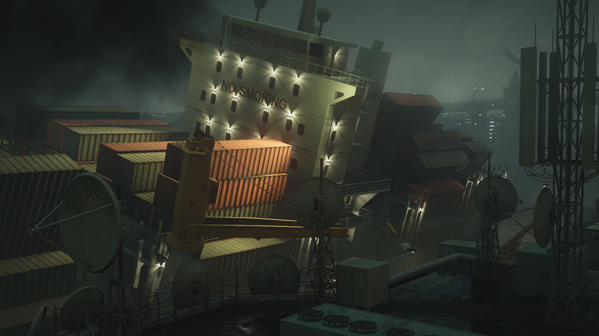
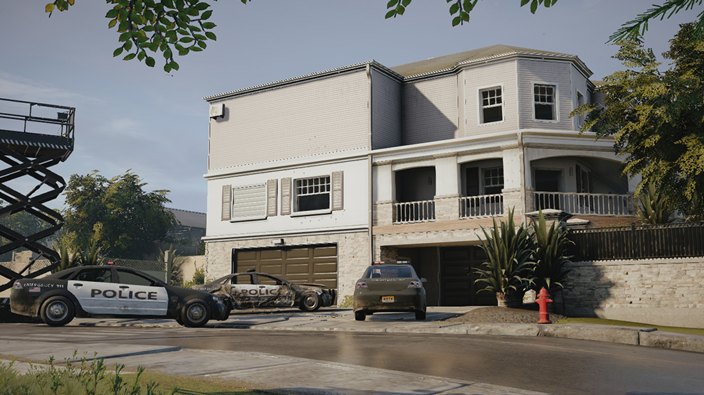
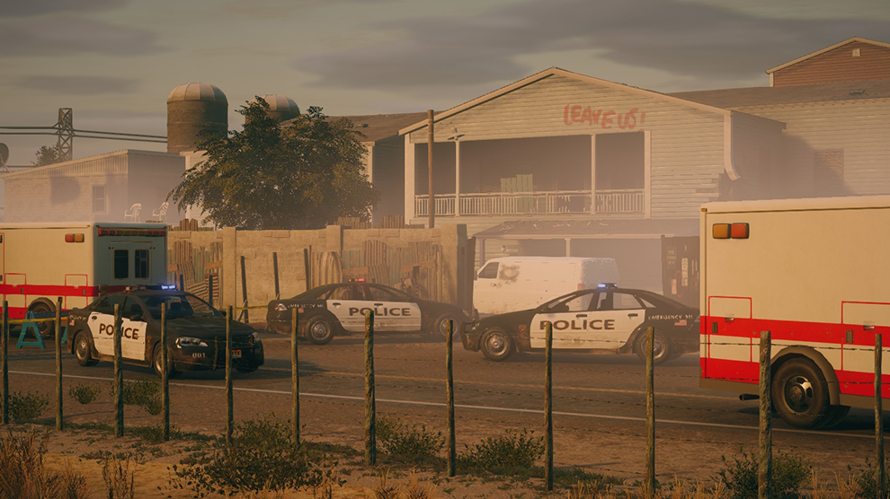

Список карт
Канал
Карта "Канал" - это часть индустриального района Гамбурга. Особое стратегическое значение имеют точки пересечения канала, расположенные между зданиями. Карта предлагает множество интересных тактических возможностей, благодаря мостам, зданиям и многочисленным точкам доступа.
Дом
Эта карта, на которой обыгрывается привычная обстановка и мнимая защищенность, изображает типичный дом в пригороде. Наглядный пример того, как тактика разрушения может повлиять на ход боя и результат игры. Классическая карта для отработки навыков штурма.
Орегон
Карта "Орегон" позволяет принять участие в штурме лагеря, подготовленного для выживания в случае глобальной катастрофы. Это большая эклектичная карта, действие происходит в сельской местности, и для победы от игроков потребуется разработать гибкую адаптивную тактику.